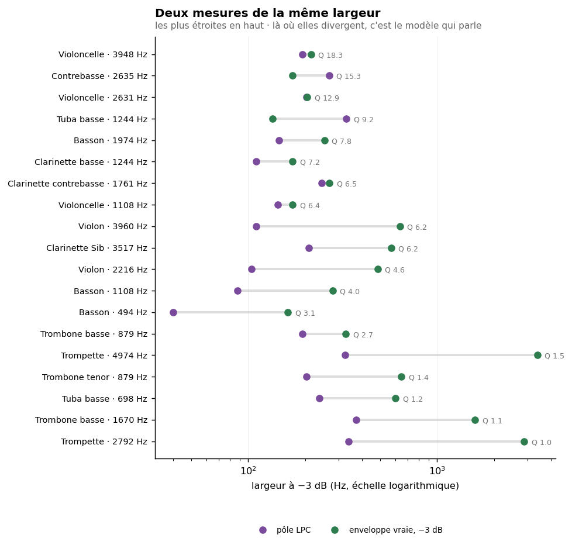
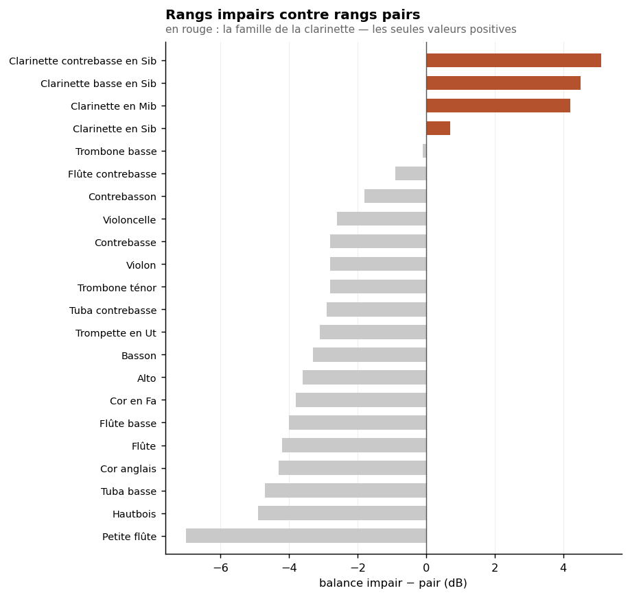
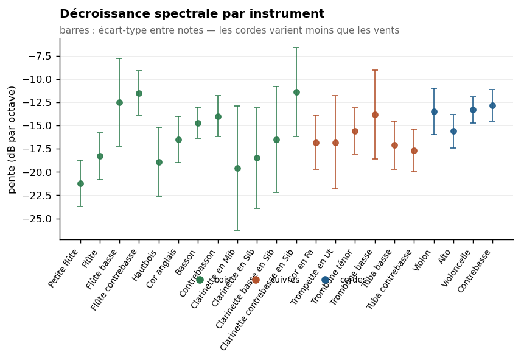

Sommaire › Synthèses



Un formant, c'est une fréquence centrale et une largeur. L'étude ne publiait que la première. Ce document dit pourquoi la seconde est beaucoup plus difficile qu'il n'y paraît, et ce qu'on peut malgré tout en affirmer.
Sur dix-neuf formants établis confrontés par deux méthodes indépendantes : un seul accord. Dix sont indéterminés — l'enveloppe est à son propre plancher de résolution. Huit divergent, et parmi eux la trompette et le trombone basse n'ont aucun pic localisé : seul le modèle LPC y place une résonance étroite, parce qu'il y est obligé.
Le LPC suppose un système tout-pôle source-filtre : une source indépendante excitant un résonateur passif. C'est un modèle du conduit vocal, et il y excelle. Chez un instrument à vent, l'anche et la colonne d'air sont couplées — le résonateur impose l'oscillation au lieu de filtrer une source autonome.
Et le LPC rend toujours ordre/2 résonances, qu'elles existent ou non. Il ne peut pas dire
« il n'y a pas de formant ici », ce que nous devons pouvoir dire.
La largeur s'y lit sur le module du pôle : BW = −(fe/π)·ln|r|.
Analyses_formants-mai26/formant_analysis.py calculait les racines (ligne 175) et n'en gardait
que l'angle. Le module était dans la même variable et n'a jamais été sauvegardé.
largeurs_lpc.py le récupère sur exactement le même ensemble de fichiers — 4 934 notes,
~180 000 pôles.
Correction apportée au passage. Mai26 utilisait l'ordre 18 à 44 100 Hz sans décimation : neuf paires de pôles pour couvrir 22 kHz, soit une résonance tous les 2 400 Hz. Le modèle est sous-dimensionné et attribue donc une largeur excessive à chaque pôle. Vérifié sur le basson : la même résonance mesure 150 Hz ainsi et 45 Hz après décimation à 12 kHz. C'est l'artefact qui fait que le LPC « trouve toujours quelque chose » et qu'on le représente en ellipses larges.
Le cepstre ne suppose rien : il sépare la variation lente du log-spectre de la variation rapide du peigne harmonique. Mais un ordre fixe porte le défaut d'Orchidea — l'ordre N ne retire le peigne que si f0 < fe/N. Ordre 160 → sous 276 Hz. Ordre 80 → sous 551 Hz. Mesuré sur la trompette : 44 % des pics tombent sur un harmonique avec l'ordre fixe 80, 0 % avec l'ordre adapté à f0.
D'où l'enveloppe vraie de la méthode 6, et la largeur lue directement à −3 dB sur la courbe,
sans modèle de pôles et sans nombre de résonances imposé. Une largeur n'est retenue que si le
niveau redescend de 3 dB des deux côtés ; sinon le pic est marqué ouvert et rien n'est
publié.
198 000 mesures de pic sur cinq corpus, 102 configurations.
Les deux mesures ont d'abord été faites avec la segmentation de mai26 — 100 ms fixes depuis le début du fichier, fenêtre de 500 ms — pour que LPC et enveloppe portent sur des segments identiques. Ce n'est pas la convention du projet, et c'est un défaut : sur SOL l'onset médian est à 25 ms, mais 16,7 % des fichiers ont leur onset après 100 ms, de sorte que le segment commence avant le son et contient l'attaque entière ; 0,7 % ne contiennent pas la note du tout.
Les deux scripts acceptent donc --segment v7 — onset détecté + 200 ms, fenêtre de
1 500 ms, la convention du projet — et tout a été relancé ainsi. Les quatre autres corpus
l'utilisaient déjà, leurs mesures venant des fichiers de spectres.
Les chiffres bougent de 0 à 35 %, aucun verdict ne change. La valeur la plus déplacée est le LPC du violon à 2 216 Hz (165 → 104 Hz) ; les cas de plancher restent au plancher, les divergences restent des divergences, et le seul accord reste le seul accord. C'est un test de robustesse qui passe.
Les deux jeux sont conservés : Largeurs/LPC/ et Largeurs/Enveloppe/SOL/ pour la
segmentation mai26, Largeurs/LPC-v7/ et Largeurs/Enveloppe/SOL-v7/ pour celle du projet.
L'ordre cepstral étant adapté à f0, la résolution de l'enveloppe dépend de la note jouée :
elle vaut environ (fe/2)/C, où C = 0,7·QCOMB·BW/f0. Une note grave autorise une mesure fine,
une note aiguë non.
Contrôle sur les 102 configurations des cinq corpus :
| ρ(largeur, f0) positive dans | 100 cas sur 102 · médiane +0,41 |
| largeur / résolution, médiane | 0,80 — sous le plancher |
| mesures au plancher, médiane | 68 % |
La largeur mesurée suit donc la hauteur jouée, et pour la configuration médiane elle est en dessous de la résolution de la méthode. La mesure n'est pas valide en général.
Les huit configurations les mieux résolues, tous corpus confondus :
| Corpus | Instrument | n | largeur/résolution | % au plancher |
|---|---|---|---|---|
| SOL | Trombone basse | 1 314 | 3,77 | 24 % |
| ZSamples | Trombone basse | 524 | 3,01 | 28 % |
| ZSamples | Trombone ténor | 9 936 | 2,84 | 31 % |
| SOL | Tuba contrebasse | 2 785 | 2,55 | 31 % |
| SOL | Trompette | 596 | 2,50 | 40 % |
| VO | Tuba basse | 928 | 2,46 | 33 % |
| VN | Tuba contrebasse | 1 746 | 2,46 | 30 % |
| SOL | Trombone ténor | 751 | 2,26 | 34 % |
Les huit sont des cuivres graves, et ils viennent de quatre corpus différents. Le constat se réplique donc : ce sont les seuls instruments dont les formants sont assez larges pour que l'enveloppe puisse les résoudre.
Une seule note ne peut pas révéler une résonance plus étroite que son propre espacement harmonique. L'enveloppe interpole entre les harmoniques ; entre deux points, elle ne sait rien. C'est une borne physique, pas un réglage.
Conséquence : la mesure note par note ne peut atteindre que les formants larges. Et l'enveloppe composite de la méthode 8, qui agrège toutes les notes, est sur une grille au douzième d'octave, soit 0,083 octave — elle ne résout donc pas non plus un formant de Q > 12.
Pour les formants étroits, aucune de nos méthodes d'enveloppe ne donne de largeur. Seul le LPC en produit une, et elle dépend de l'ordre choisi.
LPC à l'ordre 24 après décimation à 12 kHz · enveloppe sur les mêmes notes du même corpus ·
segmentation du projet (onset + 200 ms). Q_env = formant / largeur d'enveloppe.
| Instrument | Formant | LPC | Enveloppe | Q_env | Verdict |
|---|---|---|---|---|---|
| Clarinette contrebasse | 1 761 Hz | 244 Hz | 269 Hz | 6,5 | ACCORD |
| Basson | 1 974 Hz | 146 Hz | 253 Hz | 7,8 | divergence ×1,7 |
| Basson | 1 108 Hz | 88 Hz | 280 Hz | 4,0 | divergence ×3,2 |
| Trombone basse | 879 Hz | 194 Hz | 328 Hz | 2,7 | divergence ×1,7 |
| Trombone ténor | 879 Hz | 204 Hz | 646 Hz | 1,4 | divergence ×3,2 |
| Trombone basse | 1 670 Hz | 373 Hz | 1 583 Hz | 1,1 | divergence ×4,2 |
| Trompette | 2 792 Hz | 339 Hz | 2 880 Hz | 1,0 | divergence ×8,5 |
| Trompette | 4 974 Hz | 325 Hz | 3 386 Hz | 1,5 | divergence ×10,4 |
| Basson | 494 Hz | 40 Hz | 162 Hz | 3,1 | plancher |
| Violoncelle | 1 108 · 2 631 · 3 948 Hz | 143 · 203 · 193 | 172 · 205 · 215 | 6,4–18,3 | plancher |
| Violon | 2 216 · 3 960 Hz | 104 · 110 | 484 · 635 | 4,6–6,2 | plancher |
| Tuba basse | 698 · 1 244 Hz | 238 · 331 | 603 · 135 | 1,2 · 9,2 | plancher |
| Clarinette en Sib | 3 517 Hz | 209 Hz | 571 Hz | 6,2 | plancher |
| Clarinette basse | 1 244 Hz | 110 Hz | 172 Hz | 7,2 | plancher |
| Contrebasse | 2 635 Hz | 268 Hz | 172 Hz | 15,3 | plancher |
Un accord sur dix-neuf.
Regardez les deux lignes de la trompette. L'enveloppe donne une largeur de 2 762 Hz pour un centre à 2 792 Hz, et 4 651 Hz pour un centre à 4 974 Hz. Autrement dit Q ≈ 1 : la « résonance » occupe toute la région. Il n'y a aucun pic localisé. Même chose pour le trombone basse à 1 670 Hz (Q ≈ 1,1) et, de peu, le trombone ténor à 879 Hz (Q ≈ 1,4).
Et ce n'est pas un résultat isolé : la fiche de la trompette le disait déjà sans l'expliquer — « les bandes à −3 dB sont très larges, 1 318–5 915 Hz pour les trois candidats, signe que la méthode ne parvient pas à circonscrire les pics ». Trois méthodes indépendantes convergent donc : il n'y a rien de localisé là.
Le LPC, lui, annonce 249 Hz. Il le fait parce qu'il n'a pas le choix : il doit placer ses pôles quelque part.
L'enveloppe vraie n'est pas un instrument de mesure de largeur. C'est un détecteur de localisation. Là où elle donne Q ≈ 1, la valeur LPC est une fabrication du modèle.
La trompette à 2 792 Hz est établie par la route A — paire stricte VN + SOL, provenances indépendantes, écart nul. Sa position réplique. Et pourtant aucune note n'y montre de pic localisé.
Les deux constats ne se contredisent pas, et c'est instructif : deux corpus peuvent placer le maximum de l'enveloppe composite au même point de grille sans qu'aucune note n'ait de résonance localisée à cet endroit. Ce qui réplique alors est une région d'énergie, pas une résonance.
À inscrire dans la fiche de la trompette et dans celle du trombone basse. Un formant établi en position n'est pas nécessairement un formant au sens physique.
| Catégorie | Formants | Ce qu'on écrit |
|---|---|---|
| Largeur mesurée | clarinette contrebasse 1 761 Hz | 231–307 Hz, soit Q ≈ 6 — deux méthodes concordantes |
| Large, non localisé | trompette 2 792 et 4 974 · trombone basse 1 670 · trombone ténor 879 | Pas de pic. Région d'énergie, non résonance. Ne pas publier de largeur |
| Large, localisé | basson 1 108 et 1 974 · trombone basse 879 | Q entre 3 et 7 selon la méthode. Donner la fourchette, jamais un chiffre |
| Étroit, non mesurable | violon · violoncelle · clarinettes · contrebasse · tuba basse | Borne supérieure seulement : plus étroit que la résolution, soit Q > 8 environ |
C'est moins que ce qu'on espérait et c'est défendable. Meyer dessinait des triangles sans échelle ; nous pouvons dire lesquels de ces triangles correspondent à un pic et lesquels non, ce qu'aucune source ne fait.
```bash cd Scripts/v7-formants-2026 python3 largeurs_lpc.py --mai26 ../../Etude-Formants/Analyses_formants-mai26 \ --corpus ~/kDrive/Samples/Orchidea-dbs/OrchideaSOL_and_friends \ --sortie ../../Etude-Formants/Largeurs-LPC
python3 largeurs_enveloppe.py --mai26 ../../Etude-Formants/Analyses_formants-mai26 \ --corpus ~/kDrive/Samples/Orchidea-dbs/OrchideaSOL_and_friends \ --sortie ../../Etude-Formants/Largeurs/Enveloppe/SOL python3 largeurs_enveloppe.py --spectres ../../Etude-Formants/Instruments/VN \ --etiquette VN --sortie ../../Etude-Formants/Largeurs/Enveloppe/VN ```
Les CSV sont en format long — une ligne par pôle ou par pic, avec note, dynamique, segmentation,
ordre, fréquence, largeur, et pour l'enveloppe le drapeau ouvert et l'ordre cepstral employé,
qui donne la résolution. La granularité permet de reprendre la question par registre, ce qui
n'est pas fait ici.
| Dossier | Contenu |
|---|---|
Largeurs/LPC/ |
45 configurations, segmentation mai26, configurations fidèle et corrigée |
Largeurs/LPC-v7/ |
idem, segmentation du projet (onset + 200 ms) |
Largeurs/Enveloppe/SOL/ · SOL-v7/ |
45 configurations, les deux segmentations |
Largeurs/Enveloppe/{ZSamples,Xsamples,VO,VN}/ |
57 configurations, segmentation du projet |
Largeurs/Comparaison/confrontation_lpc_enveloppe.csv |
le tableau de confrontation ci-dessus |
Largeurs/Comparaison/controle_resolution.csv |
le contrôle de résolution, 102 lignes |
Mesures/ZSamples/ |
spectres de ZSamples, régénérés le 25/10 |
Environ 198 000 mesures de pic d'enveloppe et 180 000 pôles LPC au total.
Les travaux restants sont tous dans
_PLAN-DE-REPRISE.md, qui est la seule liste à tenir. Ne pas en ouvrir une ici : c'est ainsi que huit listes se sont contredites entre le 23 et le 26 octobre.
Largeurs/Comparaison/.